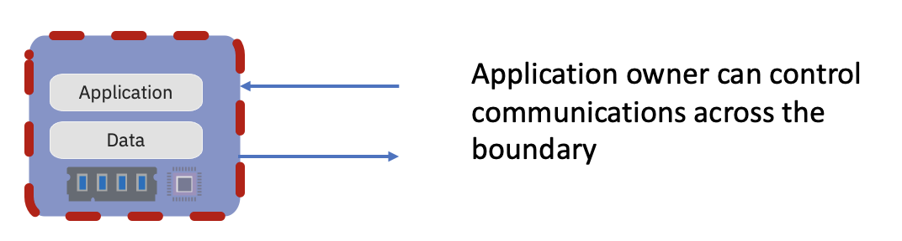
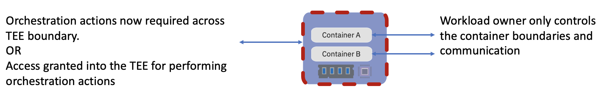

Confidential Containers
We are interested in integrating existing Trusted Execution Environments (TEE) infrastructure support and technologies with the cloud native world.
Key considerations are:
Allow cloud native application owners to enforce application security requirements
Transparent deployment of unmodified containers
Support multiple TEE and hardware platforms
Introduce a trust model which separates Cloud Service Providers (CSPs) from guest applications
Apply least privilege principles to the Kubernetes cluster administration capabilities which impact delivering Confidential Computing for guest applications or data inside the TEE
TEE’s can be used to encapsulate different levels of the architecture stack with three key levels being node v pod v container. Container isolation was initially provided in kata-containers. As an outgrowth of that project we are now expanding to address pod level support for confidential computing. Node level introduces significant challenges around least privilege for kubernetes cluster administration. We will explore the combination of pod and container level isolation, and we expect that challenges explored will have relevance to future understanding of the use of TEE’s at the node level.
Why?
Security has long been a significant concern with data encryption at rest and in flight assumed to be a key part of any offering. Trusted Execution Environments look to address the data in use security concern.
Cloud Computing adoption continues to accelerate whether it be Public, Private or increasingly common a Hybrid approach and with it the trust boundaries change. Consideration of insider threats needs to now consider the cloud provider, infrastructure provider, and managed service provider.
Certain industries are heavily focused on compliance to standards. Governments, too, are concerned both collectively and individually. The standards expected to protect software solutions continue to evolve towards a concept of Confidential Computing.
Confidential Containers seek to address the growing concerns and needs of these three areas combining and growing in the future.
How?
Trusted Execution Environments
We are actively working to support multiple TEE Technologies:
AMD Secure Encrypted Virtualization (SEV, SEV-ES)
Intel Software Guard Extensions (SGX)
Intel Trusted Domain Extensions (TDX)
IBM
Protected Execution Facility (PEF)
Secure Execution for Linux (SE)

The TEE seeks to protect the application and data from outside threats, with the application owner having complete control of all communication across the TEE boundary. The application is considered a single complete entity and once supplied with the resources it requires, the TEE protects those resources (memory and CPU) from the infrastructure and all communication across the TEE boundary is under the control of the application owner.
Cloud Native Execution Environments

However, moving to a more cloud native approach, the application is now considered a group of one or more containers, with shared storage and network resources (pod). This pod is also subject to an orchestration layer which needs to dynamically interact with the pods and containers with respect to provisioning, deployment, networking, scaling, availability, and lifecycle management.
How does the application owner trust the orchestration actions required to deliver on the cloud native promise, take advantage of the TEE capabilities and deliver on their compliance/security requirements?
Our goal is to establish patterns using TEE’s to lock out the Cloud Service Provider (CSP), establish deprivileged orchestration (Kubernetes admin) and still be able to build and deploy cloud native workloads.
Integration of Technologies
With many TEE technologies requiring a KVM boundary between the host and guest, Kata Containers are the basis for our initial work. The Kata Containers project already supports a KVM boundary between a Kubernetes Node and Kubernetes Pod and focuses on reducing the concern of a guest attacking the host, in this case a breakout from containers within the pod attacking the Kubernetes Node.
Requests from TEE vendors to support their technology within Kata Containers project led to a consideration of Confidential Computing Enablement. How to protect the guest from the host (in this case to protect the containers and workloads within a Pod from the Kubernetes Node)?
Initial exploration led to the realisation that this was not a problem possible to solve within the Kata Containers project alone. It raises considerations that need to be discussed and resolved in other areas of the cloud native stack, from container runtime to CSI to orchestration (kubelet) and brings in new projects or concerns such as attestation, reconsidering trust domains and least privilege capabilities for Kubernetes admins.